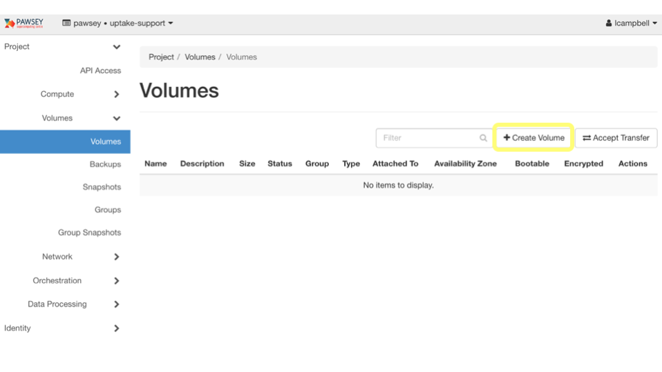
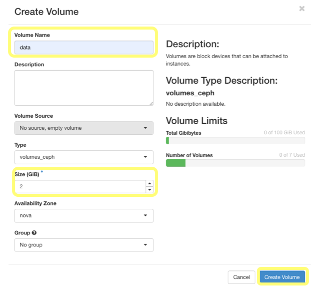
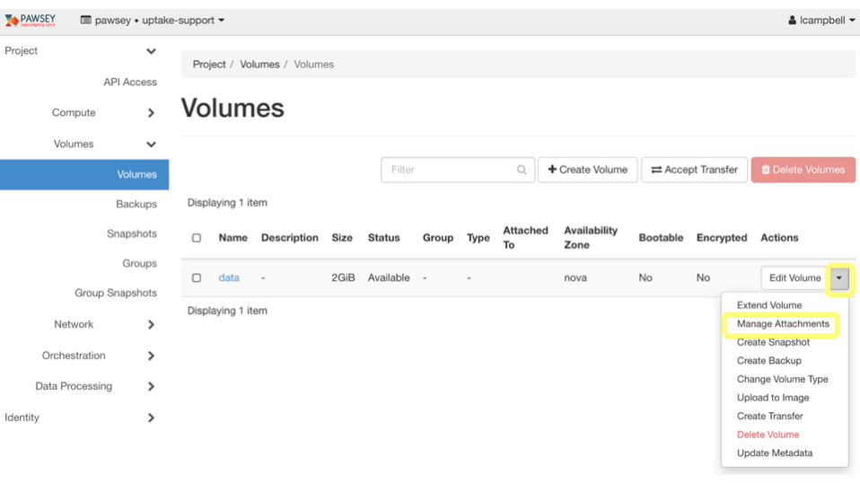
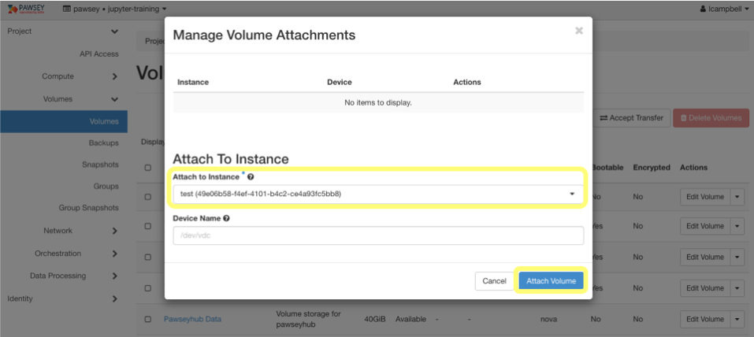
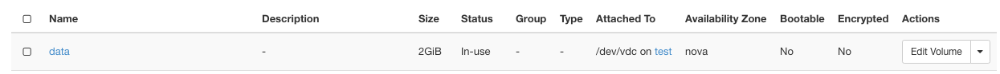

Storage
Overview
Teaching: 30 min
Exercises: 0 minQuestions
What’s the difference between root and data volumes?
How do I set up a volume to store my working data?
What do I do with my data volume if I want to delete my instance?
Objectives
Create and configure a data volume for an instance.
Attach and use a data volume with an instance.
Remove a data volume before deleting an instance.
Best practice
Nimbus gives access to two types of storage by default, both of which can be considered like the hard-disk drive of your desktop or laptop:
Root Volume - includes your home directory, and storage for the operating system of your instance, and has the device name
/dev/vdaData Volume - a second, independent volume you can attach to your instance for working storage, and has the device name
/dev/vdcWe recommend you use the Root Volume strictly as the home for your operating software, and that all data and documents are kept on a Data Volume. Discuss why you think we recommend this?
Answer
One answer is because it allows you to take full advantage of the flexible nature of cloud computing, so for example if your instance develops a problem, you can quickly delete and recreate the instance without losing your working data. When you delete an instance, the original root volume is deleted also; however, because you have not stored your working data there, you have no data loss. Then, when you create a new instance, you can attach the data volume to it and continue working with your data.
This episode discusses how to set up and format a data volume with your instance. This is a two-step process. You complete step 1 – attaching a new data volume to your instance – from the Nimbus dashboard. You perform step 2 – formatting the data volume and mounting (or connecting) it to your instance – from the terminal.
Activity: Create a data volume for an instance
1. Create a volume
From the Nimbus dashboard, go to Volumes then Volumes. Click on the Create Volume button.

The Create Volume dialog box will appear. Enter a Volume Name and > Size (GiB) for the volume, then click the Create Volume button at the bottom of the dialog box.

2. Attach a volume
On the Volumes page the data volume is listed. To attach this volume to your instance, use the drop down menu on the right to select Manage Attachments.

The Manage Volume Attachments dialog box displays. In the Attach To Instance field, select your instance, then click the Attach Volume button.

When the dialog box closes you should see your data volume attached to your instance in the volumes panel.
You have created and attached a new data volume to your instance. Now you must make it useable.
Activity: Prepare a data volume for use
1. Create a filesystem
To make a new data volume usable, you must format it. This means that you need to create a filesystem on the volume. Log in to your instance from the terminal using SSH. Once logged in, test the unformatted volume is properly attached by entering the following command:
ubuntu@test-instance:~$ sudo fdisk -l /dev/vdc
You should see output like below:Disk /dev/vdc: 20 GiB, 21474836480 bytes, 41943040 sectors Units: sectors of 1 * 512 = 512 bytes Sector size (logical/physical): 512 bytes / 512 bytes I/O size (minimum/optimal): 512 bytes / 512 bytes
You next need to format and create a filesystem on the volume. You do this using the mkfs command.Warning
Use mkfs only once on a volume. The command erases all data already there. If you are not sure if the volume has a filesystem, you can run the following command:
ubuntu@test:~$ sudo file -sL /dev/vdc
If there is a filesystem installed, you will see output like that below, and should therefore NOT run the mkfs command unless you are sure you want to format the volume./dev/vdc: Linux rev 1.0 ext4 filesystem data, UUID=19916909-e2e2-4c44-8c34-fc7ded13918d (extents) (64bit) (large files) (huge files)
To format a volume and create a filesystem, run the following command:
ubuntu@test-instance:~$ sudo mkfs.ext4 /dev/vdc
You will see the following output:mke2fs 1.42.13 (17-May-2015) Creating filesystem with 5242880 4k blocks and 1310720 inodes Filesystem UUID: 4523e176-043a-4d3f-b4a9-0c74ac9a4562 Superblock backups stored on blocks: 32768, 98304, 163840, 229376, 294912, 819200, 884736, 1605632, 2654208, 4096000 Allocating group tables: done Writing inode tables: done Creating journal (32768 blocks): done Writing superblocks and filesystem accounting information: done
2. Mount the filesystem
Now that the creation of the filesystem is complete, you can mount the volume. Using this example will mount the volume to the new directory ‘/data’:
ubuntu@test-instance:~$ sudo mkdir /data ubuntu@test-instance:~$ sudo mount /dev/vdc /data ubuntu@test-instance:~$ df -h | grep vdc /dev/vdc 20G 44M 19G 1% /data
The output of the df command shows that the volume attached to ‘/dev/vdc’ is now mounted to the ‘/data’ directory. However, since you had to use root permissions to create the ‘/data’ directory, you do not own it, and cannot use it to copy and access data. To change ownership, complete the following command:ubuntu@test-instance:~$ sudo chown ubuntu /data
You can now store files and create subdirectories in the /data directory. Try it by creating a file, typing some made up data into it, then save and quit (^X):
ubuntu@test-instance:~$ nano /data/my-data-file ubuntu@test-instance:~$ ls /data ubuntu@test-instance:~$ cat /data/my-data-file
3. Unmount a volume
If you need to unmount your data volume and detach it from your instance, run the following command:
ubuntu@test-instance:~$ sudo umount /data
Next, from the Nimbus dashboard select Volumes from the Volumes tab, use it’s drop down menu on the right to select Manage Attachments, then click the Detach Volume button, and then again to confirm. WARNING: If you detach a volume before you unmount it, you may lose data.
Key Points
Use a data volume to store working/project data.
Do not use the root volume to store data, as you will lose your data if you delete the instance
If you need to disconnect an attached and mounted data volume from your instance, first unmount and then detach it, or you may lose data during the process.